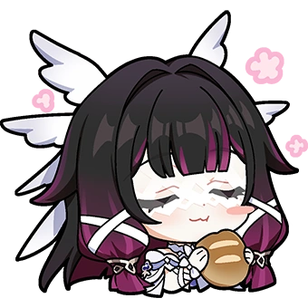
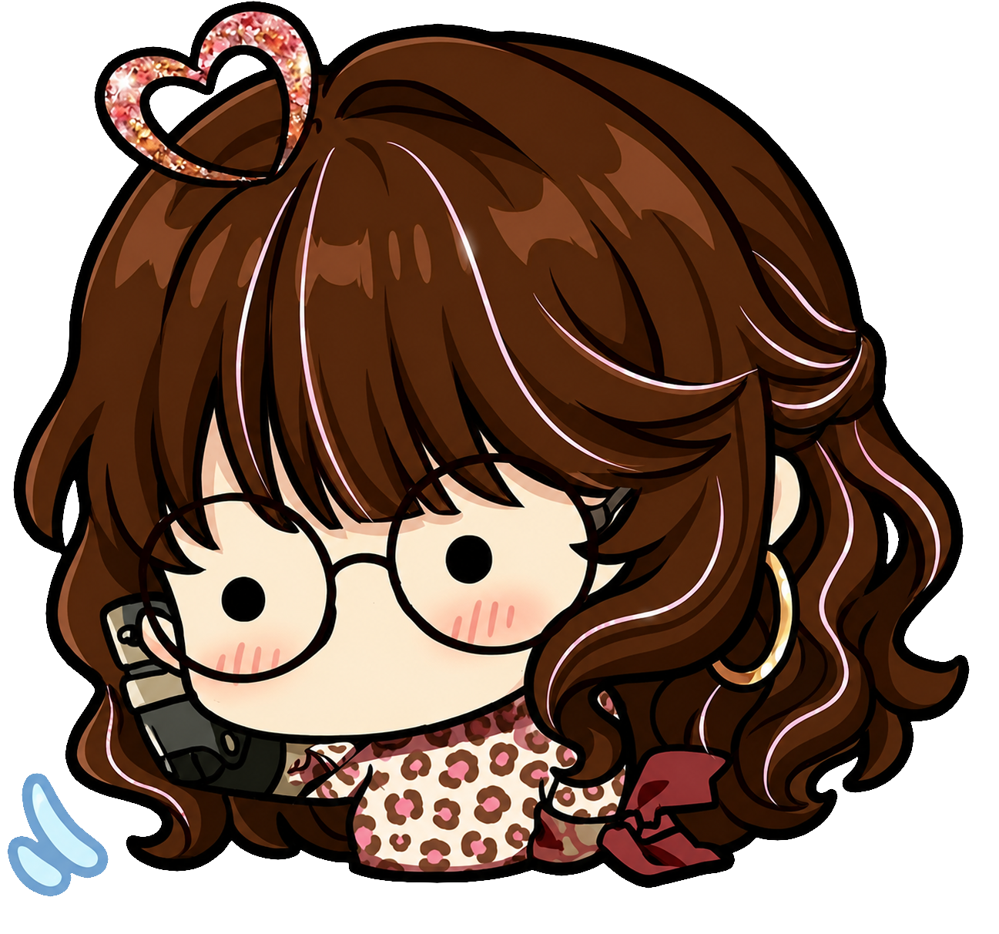
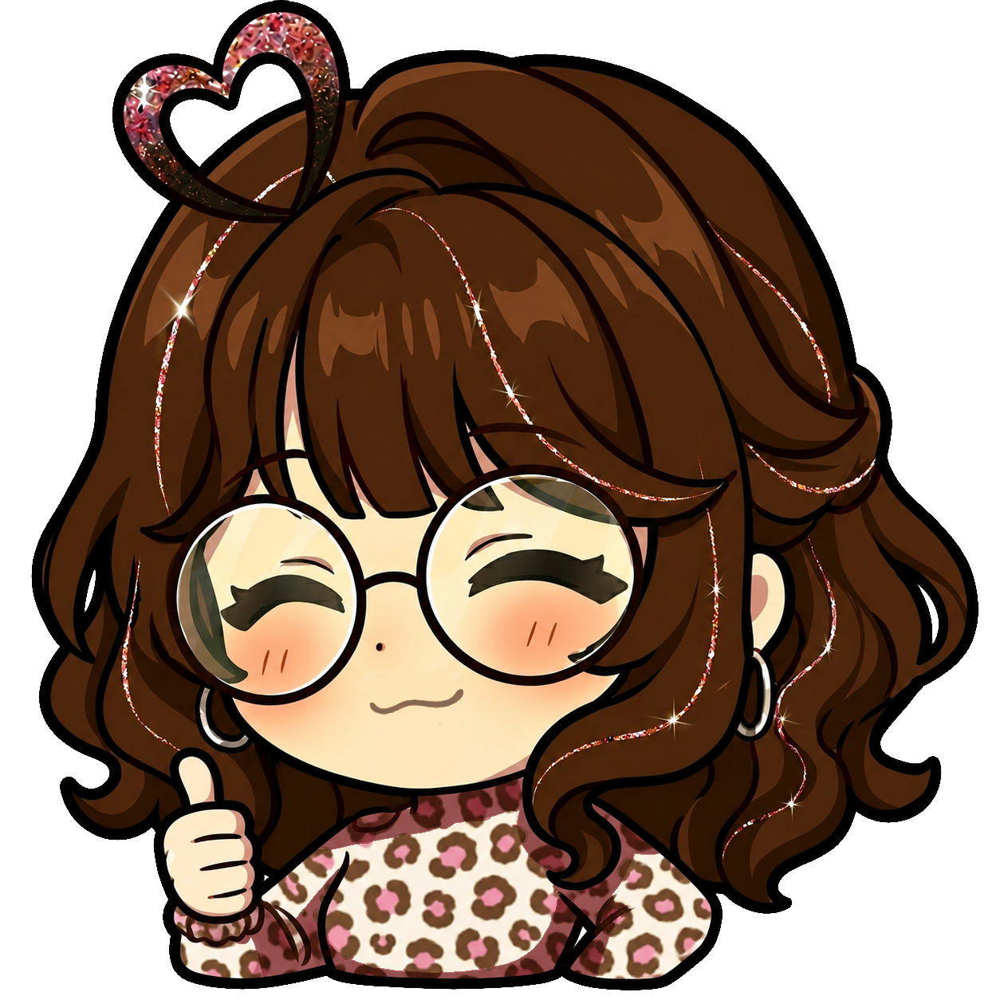

Sobre la Wiki
¿Por qué una wiki de Genshin Impact
Tema fue elegido para compartir detalles interesantes del juego. Fue una desisión arriesgada por el rumbo de esta página ya que me surgió la idea de crear una wiki de un juego que me apasiona por no decir ser uno de mis juegos favoritos, siento que es uno de los juegos que más me impactaron ya que fue mi primer acercamiento a otro tipo de juegos, cosas como los personajes, su jugabilidad de mundo abierto, y mi parte favorita su historia porque me encanta como se desenvuelve su historia Mi objetivo con esta página es demostrar mis capacidades que se enseñaron en la Experiencia Educativa: Fundamentos de Tecnologías Web.
Quize que esta página no "solo funcione", si no más bien crear un ambiente dentro de esta página un poco más relajado, y simple ya que tambien implementé algunos saberes de la E.E de UX para crear algo que no solo me guste a mi si no a la gente que lo va a usar, por ejemplo la paleta de colores, quise mantener solo unos 3 a 4 colores para no sobresaturar la vista y sea mucho más fácil de visualizar. No elegí como los colores que mas representaran el juego, si no más bien represntar esa experiencia ya que he jugado por 5 años, del cual le tengo mucho cariño y es por eso se eligió el rosa y por el lado del azul mas que todo como esa calma que me da ya que se siente como un lugar seguro.

"Incluso chispas momentáneas pueden dejar llamas hermosas e inextinguibles en el corazón de quienes miran el cielo nocturno."
Desglose de la página
Objetivo
La idea principal de este proyecto era crear un cátalogo de consulta de armas, personajes, y recomendaciones para jugadores tanto nuevos que empezaron apenas recientemente, como veteranos que juegan desde que apenas inició el juego, de la cual se depliega de forma dinamica y con distintos tipos de filtrado asi permitiendo la facilidad de búsqueda de datos específicos, permitioendo así que este proceso sea mucho más fluido y eficiente.
Recuperación de información (XML)
Toda la información de los personajes, armas, artefactos y equipos están almacenados en archivos XML, ya que guarda la información de manera independiente de la otra, ya que tambien se crearon distintos archivos para evitar que se mezclaran los datos.
Validación (DTD)
Motor Dinámico (AJAX) y Java Script
Diseño (CSS)
UX
Se usó Inteligencia Artificial para crear los diseños primitivos de como iba a ser esta pagina web en un inicio, se usó Gemini para crear unos primeros borradores que fueron utiles para el diseño final
Sobre la Autora

Soy Jetzaly, estudiante de LISTI en la Universidad Veracruzana
Contacto
